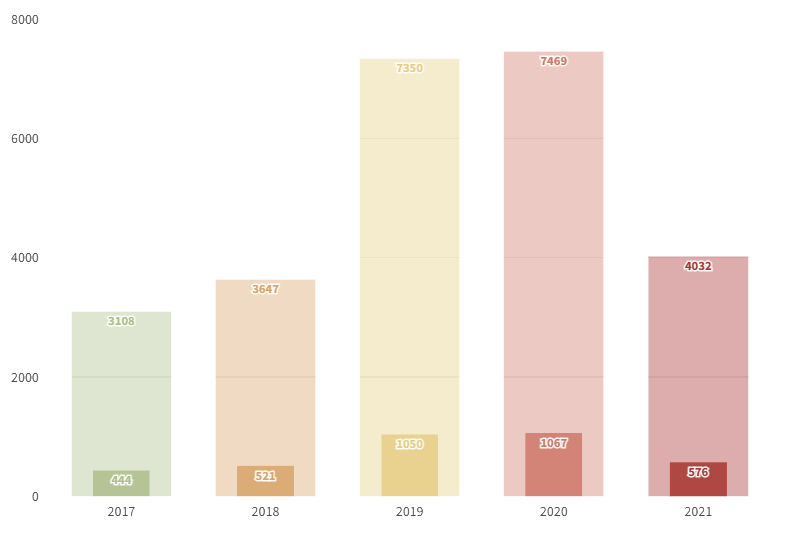
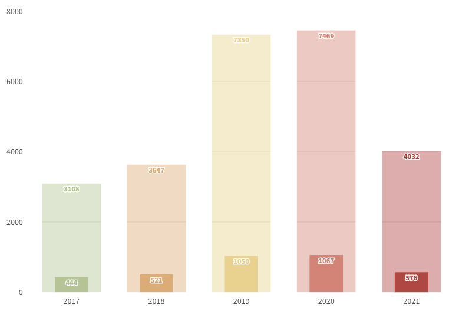

梦子（化名）今年16岁，在一个二线城市读书。
这本是一个青春的惊喜与学业的充实所紧紧热拥的高中年华，魔鬼却悄然而至……
一个自称就读于某211大学的网友，以一种出乎意料的方式——在未经梦子允许的情况下打印了她的照片，并贴满了房间天花板。梦子在抖音上上传过自己的照片。在没有任何防备的情况下，这些图片成了乔装打扮的犯罪贩子牵扯梦子心灵的锁链。
这不是梦子想要的，可是年少的情愫也在蠢蠢欲动，终究不能抵抗罪恶挖空心思的拨撩与蛊惑。一时间少女也竟迷失了方向。
“他说我太好看了，忍不住。”这件事让梦子感到十分的恶心与不适。她不知道自己的肖像将如何面对一个真人，以及他的——所作所为。
不适仅仅是互联网世界的初试，深深的恐惧最终将梦子淹没，如同在海上飞舞的蝴蝶，始终看不到栖息的花园。 网络世界不是梦子的后花园，而是犯罪分子的猎色场。
犯罪竟然将手从网络中伸出，触碰到了梦子的现实生活。有一个信息工程专业的男生，凭借一张梦子发布在抖音的照片，查到了梦子家庭和学校的具体住址，同时频繁给她发一些震碎三观的性虐待的视频。
虚拟世界对现实产生了前所未有的震撼与恐惧。梦子说，“我微信和QQ都注销了。”唯一终止罪恶的方式只是切断联系，但是内心的恐惧却是斩切不断的，并且常常勾引起她的另一段经历。
在梦子遭受网络猥亵伤痕下，是梦子的另一块伤疤。时至今日，疤痕早已就凝固在历史的尘烟里，却仍有阵阵余痛。梦子在现实中被一个邻居姐姐猥亵，彼时的梦子还在上三年级。
可是，梦子也从未将这些经历讲述给任何人。甚至是梦子的父母也对于梦子所受的伤害无从知晓。对于那个猥亵过她的姐姐，她的父母也不知道，甚至他们还训斥梦子为何不和对方打招呼。
梦子说自己没有任何关于性的想法，“我觉得性好恶心。” 15岁的网络上的那段经历，已经给她的内心蒙上了巨大的阴影。
她的朋友认为她这样很奇怪，“我朋友说我不正常”。对于梦子而言，性和欲望是一件她试图回避的事情，“有性欲是一件很羞耻的事情。”而她的这些想法和她以往的经历不无关系。
回首这一段不堪回首的经历，梦子依旧不能抵抗情绪的侵袭和对于自我的怀疑。尽管梦子只是一个无辜者。
“有时候我真希望自己长得丑一点。”梦子认为自己遭受这些事情的主要原因之一就是自己长的太漂亮了。或许在梦子心里，如果自己长得丑一点，那个姐姐就不会脱自己的衣服，那个自称211学生的人就不会打印自己的照片，那个电子信息工程的男子就不会去查自己的地址。
“要是我没那么漂亮就好了” 这是采访时梦子说的最多的一句话。
梦子的故事真实地发生在我们身边，但这仅仅是众多案件的冰山一角。
不同于游戏互动剧情的虚拟，现实世界中更多的儿童正经历着与犯罪分子差距悬殊的较量。
解释网络猥亵的类型，补全网络猥亵的定义
狭义的，即法律意义上的“隔空猥亵”为打着“个性交友”“童星招募”等幌子，诱骗、胁迫未成年人进行“裸聊”或发送“裸照”“裸体视频”等方式进行“隔空”猥亵的网络侵害；广义的网络猥亵既包括“隔空猥亵”，还包括；又包括互联网空间中的灰色地带，利用在线平台和软件进行的色情交流、交换与剥削。
网络空间中猥亵儿童的诱因行为种类繁多，主要是利用了儿童的心智不成熟、想要牟利的条件。行为人通过以上手段，无论是否有威胁、胁迫等手段出现，都通常会对儿童的心理产生一定程度的"控制"，从而对儿童实施进一步的猥亵行为。其通过诱因行为而实施的具体的网络猥亵儿童行为表现大致为：
可以看出，儿童网络猥亵均存在胁迫的过程，涉及各个平台与渠道。梦子遭受到的侵害已经十分严重，裁判文书网上公布的案例更加触目惊心，几乎涉及了网络猥亵的各种类型。
从总体出发描绘儿童遭受网络猥亵的数量特征
根据最高人民检察院发布的数据，2018年至2022年9月，利用网络对未成年人实施“隔空猥亵”和线上联系、线下侵害的犯罪占性侵未成年人犯罪的15.8%。
自最高检2018年发布指导性案例，确立无身体接触猥亵行为视同线下犯罪的追诉原则。截至2022年9月，检察机关起诉利用网络“隔空猥亵”未成年人犯罪1130人。
由于性侵害案隐率处于较高的水平。中国人民公安大学曾经做过女童性侵隐案率的调查，通过对全国5800名中小学生进行问卷调查，得出结果：性侵害案件的隐案率是1:7。 (即发生7起案件中只有1起会真正走进司法程序，受到法律的制裁。)
 

潜藏在媒体报道于案件审判下的儿童遭受网络性侵害数量不得而知，唯一可以确信的是，潜在的猥亵比案件高得多。
网络猥亵构成要素特征分析—（犯罪者，途径，受害者）
年龄越小，越容易落入犯罪分子的陷阱。
针对被网络的猥亵的案件统计显示，受害人年龄段处于0至14周岁的共41件，占比60%，受害人年龄段处于14至18周岁的共16件，占比23%。
社交功能的短视频平台、论坛、网络游戏等也被施害人用来当做“寻找潜在受害人”的途径。通常，施害人与受害人在这些平台中建立关系后，会转而转到微信、QQ等私密性更好、可以随时随地联系的通讯工具实施进一步的引诱。
“女童保护”也公布了2021年度性侵害案例，在这些案例中，网络发生的性侵害为17起，包括线上作案和线下作案（网友约见面后实施性侵）。被发现的网络性侵儿童案例中，往往一起案例便有几十人受害。这也印证了网络猥亵受害者众多的数量特征，在另一项调查统计的69件案例中，被受害人总数超过269人，其中涉及多名受害人（三人及以上）的案件共22件，被害人超过217人，平均一个案件就有接近10个受害人。
展望未来，描绘儿童遭受网络猥亵的总体趋势
2021年，我国未成年网民达1.91亿，而我国未成年人的总数大约是3.67亿；未成年人触网低龄化趋势愈发突出，小学生的互联网普及率已经达到了95%；还有86.7%的未成年网民拥有了属于自己的上网设备。这意味着，他们可以更自由地使用电子设备。
跨入新世纪，中国互联网的发展高歌猛进，不仅带来个各种发展的机遇，也给犯罪分子可乘之机。互联网下潜藏的各种暗流与逆流在未来的时间内仍会继续猖獗，至少目前难以看到网络猥亵数量减少的趋势。

儿童网络猥亵由于犯罪的主体与受害者的特殊性，表现出复杂的原因。 犯罪分子年龄远大于儿童年龄，二者的差距是造成网络猥亵形成的第一个原因。在于网络猥亵的过程中，最为关键的问题在于儿童与犯罪分子、平台等的权力关系的不对等。这既是未成年人无力抵抗的原因，也是未成年人需要受到各方面保护的原因。 儿童与犯罪分子的的年龄差造成了认知的不对等：
自述一： 小学四五年级12，13年大概刚接触到qq，那时候经常会有陌生人加好友，然后对面经常一通过就会发他们生殖器的图片过来，然后问大不大什么的，但是那时候也还小吧，对性知识这块没有任何了解，当时属于那种被吓到吧。有的是一通过好友就会发图片，因为那时候都会认真填自己资料9岁10岁的，然后那些通常知道是小孩子都会更兴奋会连续不断的发图片过来。
受害者由于年龄小，缺乏法律与维权意识，相比于成年人可以自主诉诸于法律，造成了诉诸法律的困难。

自述二： 反正小时候没有什么意识吧，这些事基本都是我上了大学之后，接触的东西多了，眼界也更开阔，价值观也提升之后逐渐想明白的，那个人应该是恋童癖，当时那些应该算是被隔空猥亵。不过，当初的我也不足以支持我想到这些原来是伤害，不足以支持我有勇气把这些东西说出来吧。现在偶尔想到这些事情会觉得有些恶心吧，也后悔当时没能报警，没能把证据保留下来。
儿童不敢或者没有对家长、老师、同学诉说自身的遭遇，同样是家长对于儿童的网络使用的监管不严格，也造成了儿童保护自我的困难。
自述三：对家长老师朋友，我都没有说过。
儿童性教育的缺失也不能让儿童早早的建立起性意识，于是乎，网络猥亵的施暴者，就成了儿童形成性的偏见的罪魁祸首，梦子便是最好的证明。
自述四： 我大概是四年级的时候，有大把自己玩电脑的时间，那时候毫无性知识，不太有防备意识，也不感觉外面很多坏人需要我防备，通过QQ，不记得是什么方式，有一个陌生男性加我好友，邀请视频，迷迷糊糊接通，我很好奇问他那是什么，我说像长条的气球，他说我好可爱。多年以后突然回想起来，才意识到那时候看到的是男性生殖器。
形成儿童网络猥亵的原因还有很多。然而，现实中，未成年人的五大保护（家庭保护、学校保护、政府保护、网络保护、社会保护）没有想象中的那样良好。当这五大保护失灵，只有依赖司法保护——这也代表着某种隐喻——儿童已然遭受严重的侵害。
我们绝不希望任何一个未成年人遭受网络猥亵的侵害，不仅仅是梦子，更是虚拟世界中的每一个“林蕾”。
不要忽略对于家庭网络的监管，对家庭中儿童的网络使用风险做好防护
定期检查和反思自己身边的儿童是否具备网络猥亵的风险，并及时告知与防范
同身边的儿童保持沟通，知晓他们的互联网使用情况
鼓励您积极参加儿童性教育志愿活动以及各种防范儿童性侵害的公益活动
向地区人大代表或有关部门反映，呼吁完善针对儿童网络猥亵的法律法规
教导自己身边的儿童在网络猥亵面前敢于说“不”，对于网友的要求提高警惕，坚决抵制网友的诱惑
教导您身边的小朋友保留网络猥亵的犯罪证据，并且勇敢地举报不法分子
鼓励您以公开正当的渠道传播性教育的知识，参与儿童性教育体系的建设
您可以教授儿童使用互联网平台探索更多有意义的内容，避免儿童沉溺于网络社交
尝试学习和传播网络猥亵防范策略，宣传网络猥亵的特点、防范方法、求助渠道
如果您的孩子或者身边的儿童已遭受网络猥亵，务必做好受儿童的心理辅导，对于受害儿童进行特殊关爱与救助保护
您可以转发本文，传递“互联网不是法外之地，网络猥亵也是违法犯罪”的观念。